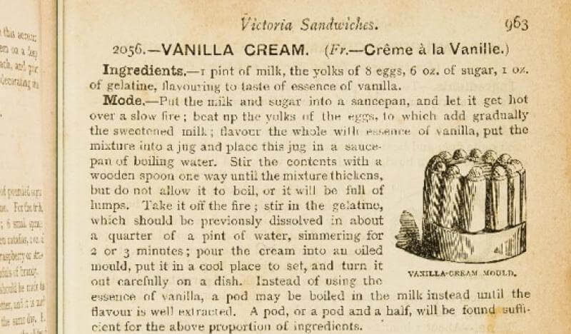
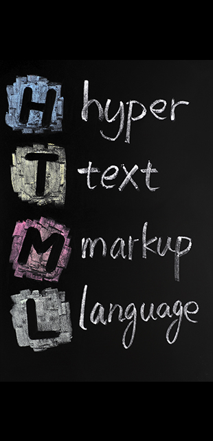
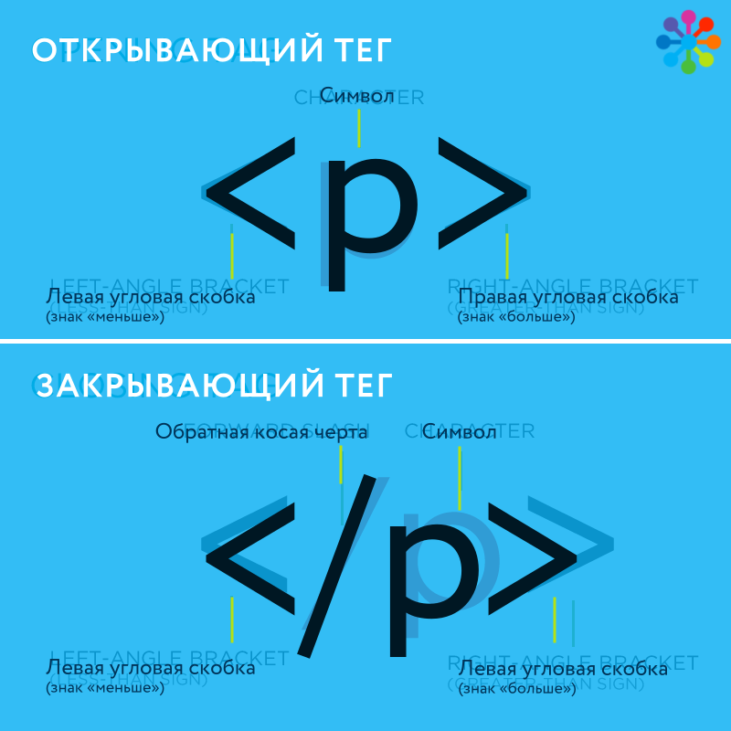
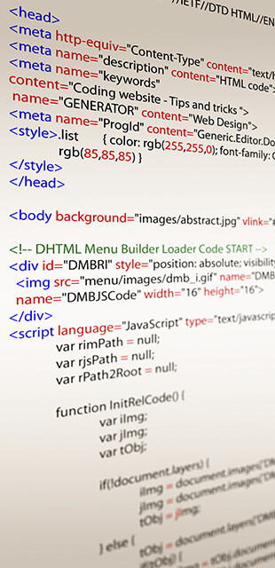
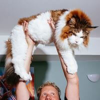

Браузер — прикладное программное обеспечение для просмотра веб-страниц. В глобальной сети браузеры используют для запроса, обработки, манипулирования и отображения содержания веб-сайтов.
Определение браузера
Где можно встретить браузер
Приложение на вашем ноутбуке (Chrome, Firefox, Safari, Opera).
Приложение на вашем смартфоне (ChromeApp, SafariApp).
Браузер может быть встроен в другое приложение (например, в почтовый клиент).
Браузер также может быть встроен в часы, телевизор, платежный терминал, банкомат, автомобиль, холодильник.
Поэтому веб-технологии так популярны. Они везде.
Что такое URL
Вы сообщаете браузеру, что отобразить, указав адрес документа в формате URL.
URL (Uniform Resource Locator) — единый указатель ресурса, в общем виде выглядит так: <протокол>://<хост>/<путь>
Протокол — «язык», на котором общаются браузер и сервер.
Хост — адрес или имя сервера, у которого мы запрашиваем документ.
Путь — адрес расположения документа на сервере.
Пример ссылки: http://netology.ru/programs/html-css-base
Что делает браузер
Формирует и отправляет запрос на сервер — HTTP.
Получает ответ сервера — HTTP.
Разбирает полученный документ — HTML.
Рисует и отображает полученный документ в окне — HTML и CSS.
Реагирует на действия пользователя — CSS и JavaScript.
На каком этапе участвует верстальщик
Как сервер отвечает на запросы, определяет backend-программист.
На этапе разбора и отрисовки документа верстальщик сообщает браузеру, что, где и как отобразить на странице.
На этапе обработки действий пользователя участвует frontend-программист.
Какую информацию содержит документ
HTML документ, полученный с сервера, содержит:
Текстовую информацию;
Структуру документа (заголовки, абзацы и так далее);
Ссылки на другие ресурсы (изображения, видео, аудио, стили).
Cемантика или структура документа
Веб-страница — это информация
Веб-страницы, в первую очередь, должны представлять информацию в удобном виде.
Давайте подумаем, из чего она состоит?
Что мы видим в книгах, журналах, газетах
текст, разбитый на абзацы;
заголовки разных уровней;
иллюстрации;
цитаты;
акценты по тексту.
Все это — хорошо известные вам элементы. И они существовали задолго до появления интернета.
И это не про оформление
Их внешний вид может отличаться в различных источниках. Но суть от этого не меняется. Вы с первого взгляда определите заголовок в новой книге.

Задача браузера
Именно такую информацию браузер должен уметь правильно представлять на экране. И значит, нам необходимо сообщить ему, что является заголовком, абзацем, где сделать акцент и когда должна следовать иллюстрация.
Разметка
Изобретаем браузер
Если бы мы изобретали универсальный способ описания документов, по которому браузер сможет их правильно отобразить на экране, то нам пришлось бы учесть следующие требования:
Для создания не должно требоваться сложное программное обеспечение.
Должна быть возможность обозначить, что является заголовком, абзацем, иллюстрацией.
Процесс создания документа должен быть простым.
Сам подход должен быть легок в изучении.
Без сложного программного обеспечения
Пусть документ будет обычным текстом, тогда для создания потребуется обычный текстовый редактор.
Стоит отметить что текстовый редактор — блокнот. Текстовый процессор — MS Word.
Обычный текст
Рагу из морского черта
Морской черт — чертовски коварная рыбина, за что
европейский удильщик и получил свое второе название.
Ее также называют «лобстером для бедных» — за плотное
мясо, по структуре действительно напоминающее лобстера.
Зато в нем нет костей, кроме огромного хребта, поэтому
при разделке нужно только снять кожу и разрезать рыбу
вдоль на два филе.
Подавать это рагу, как и все остальные, нужно в глубоких
тарелках, в каких обычно подают пасту.
Обозначать элементы
Добавим в текст документа простые текстовые метки, по которым браузер поймет, где начинается и заканчивается заголовок, абзац, где должны быть иллюстрации, на каком тексте сделать акцент.
Текст с метками
# Рагу из морского черта #
* Морской черт * — чертовски коварная рыбина, за что
европейский удильщик и получил свое второе название.
Ее также называют «лобстером для бедных» — за плотное
мясо, по структуре действительно напоминающее лобстера.
Зато в нем нет костей, кроме огромного хребта, поэтому
при разделке нужно только снять кожу и разрезать рыбу
вдоль на два филе.
Подавать это рагу, как и все остальные, нужно в глубоких
тарелках, в каких обычно подают пасту.
Простота создания
Ограничим количество возможных меток, оставив только самое необходимое.
Оставим только метки для:
заголовка;
абзаца;
цитаты;
важного текста;
выделенного текста;
иллюстрации.
Легкость изучения
А это мы проверим по итогам курса.
Требования к меткам
Метка должна быть уникальной и не должна использоваться в обычной письменной речи. Поэтому Заголовок – плохой вариант метки, как и символ *.
Они должны состоять из небольшого числа символов, иначе их набор будет утомителен. Поэтому ТутНачинаетсяЗаголовокОтнынеИВоВекиВеков — плохой вариант метки, хоть и вряд ли встретится в самом тексте.
По ним должна быть понятна их суть. Поэтому ТНЗ29 — тоже плохой вариант метки, хоть короткий и уникальный.

Мы изобретаем не браузер, а язык разметки.
Язык разметки — набор символов или последовательностей, вставляемых в текст для передачи информации о его выводе или строении.
Браузер — это просто программа, которая понимает этот язык и способна отобразить страницу, размеченную с его помощью.
HTML
HyperText Markup Language — «язык гипертекстовой разметки».
Cтандартизированный язык разметки документов во Всемирной паутине.
Википедия
Цели создания HTML
Cоздавался как язык для обмена научной и технической документацией.
Пригодный для использования людьми, не являющимися специалистами в области вёрстки.
HTML был задуман и создан как средство структурирования и форматирования документов без их привязки к средствам воспроизведения.
Особенности HTML
Просто текст в HTML-документе браузер никак не форматирует.
Переносы строк заменяет на пробел.
Несколько подряд идущих пробелов показывает как один.
Для разметки используются специальные метки, которые обозначают начало и конец абзаца, заголовка и все остальные элементы.
Чаще всего их называют тегами.
Набор тегов ограничен, и у каждого из них своя роль.
Разметка нашего рецепта рагу
Рагу из морского черта
Морской черт – чертовски коварная рыбина, за что
европейский удильщик и получил свое второе название.
Ее также называют «лобстером для бедных» – за плотное
мясо, по структуре действительно напоминающее лобстера.
Зато в нем нет костей, кроме огромного хребта, поэтому
при разделке нужно только снять кожу и разрезать рыбу
вдоль на два филе.
Подавать это рагу, как и все остальные, нужно в глубоких
тарелках, в каких обычно подают пасту.
Так рецепт выглядит в браузере
Рагу из морского черта
Морской черт – чертовски коварная рыбина, за что европейский удильщик и получил свое второе название. Ее также называют «лобстером для бедных» – за плотное мясо, по структуре действительно напоминающее лобстера. Зато в нем нет костей, кроме огромного хребта, поэтому при разделке нужно только снять кожу и разрезать рыбу вдоль на два филе.
Подавать это рагу, как и все остальные, нужно в глубоких тарелках, в каких обычно подают пасту.
В стандарт как раз входит допустимый набор тегов, их роль, и прочие особенности их использования.
Текущая версия стандарта HTML — 5.1
Все браузеры стараются обеспечить максимальную поддержку актуальному стандарту.
Вёрстка веб-страниц — создание структуры html-кода и описание стилей, размещающих элементы веб-страницы (изображения, текст и так далее) в окне браузера, согласно разработанному макету, таким образом, чтобы элементы дизайна выглядели аналогично макету.
Википедия
Тег
HTML-теги
Теги в HTML заключены в угловые скобки < и >.
Нам привычнее их называть символами «меньше» и «больше».
Между угловыми скобками записывается название тега.
Открывающий и закрывающий тег

Так как нам нужно обозначать начало и конец элемента, например, абзаца, то существует понятие открывающего и закрывающего тега.
Абзац
Тег <p> — позволяет выделить абзац текста (paragraph по-английски).
Наш рецепт с разметкой абзацев в браузере
Рагу из морского черта
Морской черт — чертовски коварная рыбина, за что европейский удильщик и получил свое второе название. Ее также называют «лобстером для бедных» – за плотное мясо, по структуре действительно напоминающее лобстера. Зато в нем нет костей, кроме огромного хребта, поэтому при разделке нужно только снять кожу и разрезать рыбу вдоль на два филе.
Подавать это рагу, как и все остальные, нужно в глубоких тарелках, в каких обычно подают пасту.
Заголовок
Тег <h1> обозначает заголовок первого уровня (heading level 1 по-английски).
Для разметки заголовков предусмотрено 6 тегов <h1>—<h6>, что позволяет нам размечать заголовки разных уровней.
Заголовок рецепта
Наш рецепт с размеченным заголовком в браузере
Рагу из морского черта
Морской черт – чертовски коварная рыбина, за что европейский удильщик и получил свое второе название. Ее также называют «лобстером для бедных» – за плотное мясо, по структуре действительно напоминающее лобстера. Зато в нем нет костей, кроме огромного хребта, поэтому при разделке нужно только снять кожу и разрезать рыбу вдоль на два филе.
Подавать это рагу, как и все остальные, нужно в глубоких тарелках, в каких обычно подают пасту.
Цитата
Для разметки блоков цитат, врезок и просто выделенных блоков текста предусмотрен тег <blockquote>.
Морской черт – чертовски коварная рыбина, за что европейский удильщик и получил свое второе название. Ее также называют «лобстером для бедных» – за плотное мясо, по структуре действительно напоминающее лобстера. Зато в нем нет костей, кроме огромного хребта, поэтому при разделке нужно только снять кожу и разрезать рыбу вдоль на два филе.
Европейский удильщик, или европейский морской чёрт – хищная рыба отряда удильщикообразных.
Подавать это рагу, как и все остальные, нужно в глубоких тарелках, в каких обычно подают пасту.
Вложенность тегов
Цитата из нескольких абзацев
В HTML можно помещать одни теги внутрь других. Поэтому мы можем текст внутри цитаты также разметить тегами абзацев.
Европейский удильщик, или европейский морской чёрт – хищная рыба отряда удильщикообразных.
Рыба съедобна. Мясо белое, плотное, без костей. Особенно популярен «морской чёрт» во Франции.
Подавать это рагу, как и все остальные, нужно в глубоких тарелках, в каких обычно подают пасту.
Особенности вложенности тегов
Тег должен быть вложен целиком в другой тег. Пересечения недопустимы.
Не все теги можно вкладывать в другие теги.
Вложенные теги — дочерние для того, в который они вложены.
Сам тег для вложенных является непосредственным родителем.
Теги для расстановки акцентов по тексту
Важный текст
Тег <strong> — сделать акцент на слове или фразе, обозначить их важность.
Выделенный текст
Тег <em> — позволяет выделить слово.
Акценты в браузере
Европейский удильщик
, или
европейский морской чёрт
– хищная рыба отряда
удильщикообразных.
Атрибуты тегов
Дополнительная информация
Чтобы сообщить браузеру дополнительную информацию о содержимом тегов или задать специальные свойства, используются атрибуты.
Атрибуты задаются в открывающем теге.
Значение атрибута задается в двойных кавычках ".
Значение записывается после символа =
Атрибутов может быть несколько, тогда они перечисляются через пробел.
Источник цитаты
Универсальные атрибуты
Можно указать в любом теге:
id — позволяет задать тегу универсальный идентификатор, чтобы в дальнейшем ссылаться на него.
class — позволяет задать через пробел один или несколько определенных пользователем классов для дальнейшего управления внешним видом элемента через стили.
Также у некоторых тегов есть специальные атрибуты, доступные только им. Например, у тега blockquote есть атрибут cite, который позволяет указать автора или источник цитаты.
Гиперссылка

Гипертекст — текст, «который разветвляется как бы сам по себе или выполняет действия по запросу».
Википедия
Тег a
В HTML для этого предусмотрены ссылки в тексте, которые позволяют по клику перейти на другую страницу или к другой части текущей страницы.
Для того, чтобы слово или фразу сделать гиперссылкой, её нужно разметить тегом a:
Атрибут href
Чтобы сообщить браузеру, куда перенаправить пользователя при клике по ссылке, укажем адрес в формате URL в специальном атрибуте href (hypertext reference — ссылка на гипертекст).
Ссылки с адресами
URL
Полный адрес документа
В URL элементов немного больше: <протокол>://<хост>/<путь>#<якорь>
Протокол — «язык», на котором общаются браузер и сервер.
Хост — адрес или имя сервера, у которого мы запрашиваем документ.
Путь — адрес расположения документа на сервере.
Якорь — идентификатор тега внутри документа, к которому нужно перейти.
Обязательно принимать для указания браузеру, какой документ открыть. Но не всегда удобно для адресации ресурсов в документе.
При определенных условиях для указания ресурсов в документе допускается опускать отдельные фрагменты адреса:
Протокол: для указания, что ресурс должен быть получен по тому же протоколу, что и этот документ
//en.wikipedia.org/wiki/Uniform_Resource_Locator#Syntax
Хост: указывая, что документ расположен на том же сервере
/wiki/Uniform_Resource_Locator#Syntax
Использовать относительный адрес: указывая, где документ расположен на сервере относительно текущего документа
Uniform_Resource_Locator#Syntax
Путь: указывая, что перейти нужно к фрагменту этого же документа.
#Syntax
Использование ссылок
Ограничения на вложенность в теге a
В тег a нельзя вкладывать другие теги a.
Всплывающие подсказки
Для ссылки можно задать подсказку в атрибуте title, которая покажется при наведении указателя мыши на ссылку:
Картинки
Тег img
Для вставки картинки в документ используется тег img.
Этот тег не имеет содержимого и закрывающего тега.
Это так называемый одиночный тег.
URL файла с изображением указывается в специальном атрибуте src.
Также для картинки обязательно требуется указывать атрибут alt.
Размер изображения
Размером изображения можно управлять с помощью стилей.
Но при подготовке изображения рекомендуется сразу уменьшать его до нужного размера, так как размер напрямую влияет на вес файла, а значит, и на скорость передачи по сети.
Если картинка не загрузится по каким-либо причинам, браузер отобразит вместо картинки текст из атрибута alt.
Этот же текст будет доступен на устройствах, не способных воспроизводить изображения.
В alt нужно написать, что изображено на картинке.
Картинка в тексте
Если картинку вставить в тексте, то она будет вести себя как символ, но в полный размер. И в 99% случаев вы получите не то, что ожидали.
Картинки в тексте в браузере

Кот по кличке Самсон официально признан самым большим котом в Нью-Йорке – возможно, не за горами и мировое признание.
Такой вариант удобен для вставки символьных изображений, таких как emodji. В остальных случаях помещайте картинку за пределами параграфа.